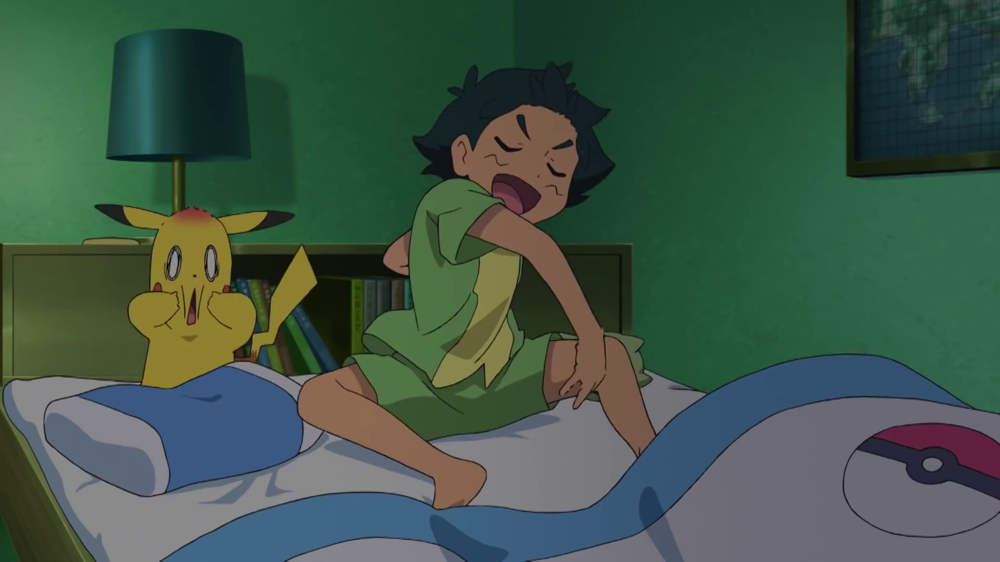
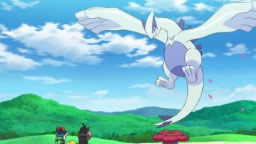
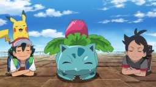
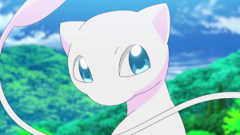

Ash Ketchum tiene un nuevo plan: ¡recorrer el mundo! Pero antes, él y su compañero Pikachu se dirigen a la inauguración del Laboratorio Cerezo, un centro de investigación dedicado a descubrir los misterios de los Pokémon en cada región. Ash conoce a Goh, otro niño con una curiosidad sin límites por los Pokémon, y ambos se alegran cuando el Profesor Cerezo les pide convertirse en colegas investigadores oficiales. Con Ash, tan decidido como siempre a convertirse en un Maestro Pokémon, y Goh, que aspira a capturar uno de cada Pokémon (incluido el singular Mew), ¡nuestros héroes están listos para la aventura y la emoción mientras exploran el vasto mundo de los Pokémon!.

Conociendo a Pikachu
Durante sus vacaciones en Alola, Ash, Pikachu y la madre de Ash encuentran un nuevo Pokémon. El profesor Oak envía un huevo Pokémon a la Escuela Pokémon.

¿Leyenda? ¡Adelante! ¿Amigos? ¡Adelante!
El Profesor Oak invita a Ash a la ceremonia de inauguración del nuevo laboratorio del Profesor Cerezo en Ciudad Carmín. Goh sale a atrapar a un Pokémon legendario.

¡La torre misteriosa de los Ivysaur!
El Profesor Cerezo les pide a Ash y Goh que investiguen la súbita aparición de Ivysaur en Ciudad Carmín, pero estos dos investigadores no coinciden en sus métodos.
¡Conociendo a Scorbunny!
Ash y Goh parten para la región Galar con un cometido. Cuando hacen una parada, unos Pokémon se roban la mochila de Ash... ¡donde lleva sus boletos de tren!
¡El fenómeno Dinamax!
Cuando se bajan del tren, Ash y Goh inician la búsqueda del Pokémon Dinamax. Entretanto, un Scorbunny les sigue el rastro muy de cerca.

¡Y luego volveré a por Mew!
El Profesor Cerezo les explica sobre las funciones Pokédex de sus teléfonos antes de que Ash y Goh se vayan a atrapar Pokémon por la zona.
¡El torneo de la Copa Flauta!
Ash y Goh viajan a la región Hoenn, donde Ash inscribió a Goh en la Copa Flauta de la Batalla de la Frontera. Sus primeros contrincantes son Hodge y su Hariyama.
¡La Carrera Iceberg de Sinnoh!
El dúo encuentra al extenuado Piplup y va a Ciudad Puntaneva en la región Sinnoh para reunirlo con su entrenadora. El Equipo Rocket los sigue.
¡Buscando a una leyenda!
Internet se inunda de referencias al avistamiento del legendario Pokémon Ho‑Oh en la región Johto. Los investigadores parten a Ciudad Iris para comprobarlo.
¡Experiencia en el paraíso!
El capitán de un barco afirma que un Dragonite lo rescató, así que Goh y Ash salen a buscar la isla de los Dragonite, que ellos creen que existe... ¡quién sabe dónde!